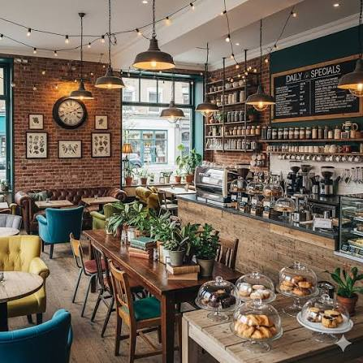

About Us
At Leinyx Cafe, we believe great coffee is best enjoyed in good company. Located in the heart of Naga, our cafe was created to be your home away from home. A warm, welcoming space where friends catch up, ideas flow, and every cup is brewed with care. From our Spanish Latte to our freshly baked favorite pastry, everything on our menu is crafted using fresh, locally sourced ingredients. Whether you're stopping by for your morning caffeine fix or settling in for a slow afternoon, we're glad you're here.
Our Products and Services
PRODUCTS:
Espresso-based Drinks
Brewed Coffee
Baked Goods
Desserts
SERVICES:
Dine-in Service
Takeout & Grab-and-Go
Online Ordering & Delivery
Why Choose Us
Quality
Every cup we serve starts with freshly roasted, ethically sourced beans brewed to perfection by skilled baristas. We pair our drinks with pastries and light meals baked from scratch daily using real, wholesome ingredients, without artificial syrups or pre-packaged shortcuts, so you get rich, consistent flavor in every single visit.
Affordable Prices
Great coffee and a welcoming space shouldn't feel like an occasional luxury. We keep our menu priced fairly so students, remote workers, and daily commuters can enjoy specialty-grade drinks and hearty snacks without breaking their budget, complete with student discounts and loyalty rewards that give back with every order.